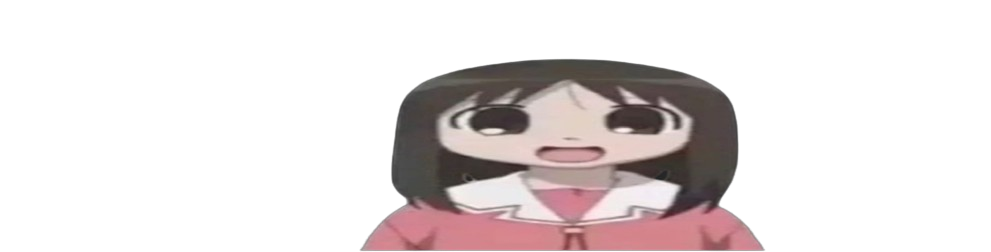

Um die Bilder zu png's zu machen nutze ich remove.bg
Das erste Bild erhielt ich von pinterest
Das zweite Bild erhielt ich von knowyourmeme.com
Das Bild von Kanye West erhielt ich ebenfalls von pinterest
Das Bild des Spongebob Controller erhielt ich von Amazon
Das Bild meines Kindergartens habe ich von Herzogbau.ch
Das Bild des primar Schulhaus habe ich von zoon.uz
Das Bild der Oberstufe erhielt ich von der Berner Zeitung
Das Bild der Bwd habe ich auf der Home Page der bwd gefunden
Das Whatsapp Logo erhielt ich von dazzling-kare-6a8d1d.netlif.app
Das Bild beim Quellen Verzeichnis habe ich von pinterest
